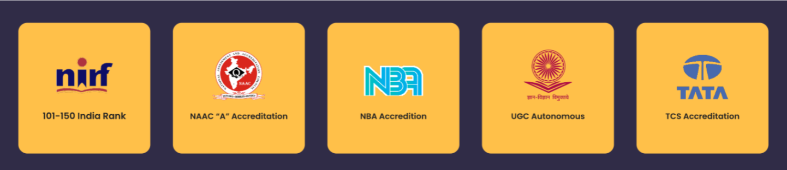

Welcome to Anurag University. We are Telangana’s top Private Institution offering
multi-disciplinary courses in Engineering, Agricultural Sciences, Pharmacy, Management and
Liberal Arts
Accreditation

At Anurag University, we’re focused on creating industry-ready graduates who are more than ready to enter the workforce.
India has witnessed the unfortunate trend of graduates unable to secure jobs due to low skill levels that don’t match the
industry standards. We aim to reverse that through carefully designed courses that include technical, extracurricular and
co-curricular programs. This makes our students get an edge over their competition.
We believe real learning happens through holistic teaching and peer interactions.
Which is why we have created a thriving campus that hosts students from various backgrounds
and perspectives. Our vision is to enable growth both through technical know-how and social awareness.
With innovative methodologies like a world-class Finishing School, partnerships with core companies and
research institutes, we groom students to be self-sufficient individuals who are well-rounded in the truest sense.
You walk out of Anurag, not just with a degree but with accomplishments and life skills to make the world a better place.